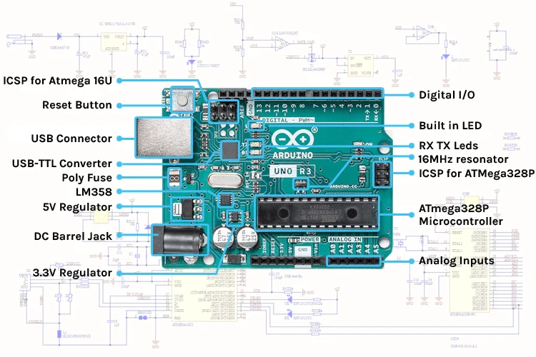

The Arduino Uno is a microcontroller board based on the ATmega328P. It has 14 digital input/output pins (of which 6 can be used as PWM outputs), 6 analog inputs, a 16 MHz quartz crystal, a USB connection, a power jack, an ICSP header, and a reset button.

| Feature | Specification |
|---|---|
| Microcontroller | ATmega328P |
| Operating Voltage | 5V |
| Input Voltage (recommended) | 7-12V |
| Digital I/O Pins | 14 (6 provide PWM output) |
| Analog Input Pins | 6 |
| Flash Memory | 32 KB (0.5 KB used by bootloader) |
| SRAM | 2 KB |
| EEPROM | 1 KB |
| Clock Speed | 16 MHz |
| Pins | Primary Function | Notes |
|---|---|---|
| 0 (RX), 1 (TX) | Serial / UART | Used to receive/transmit TTL serial data. Do not use for other tasks if you are using Serial.print(). |
| 2, 3 | External Interrupts | Can be configured to trigger an interrupt on a low value, a rising or falling edge, or a change in value. |
| 3, 5, 6, 9, 10, 11 | PWM (~) | Provide 8-bit PWM output with the analogWrite() function. |
| 10 (SS), 11 (MOSI), 12 (MISO), 13 (SCK) | SPI Bus | Used for high-speed synchronous communication with sensors and SD cards. |
| 13 | Built-in LED | There is a built-in LED connected to digital pin 13. When the pin is HIGH, the LED is on. |
| A0 - A5 | Analog Inputs | 6 analog inputs, each of which provides 10 bits of resolution (1024 different values). |
| A4 (SDA), A5 (SCL) | I2C / Wire | Used for the I2C communication protocol using the Wire library. |
In OpenHW Studio, the Arduino Uno R3 is the heart of your project. It automatically executes the code you've written in the editor. You can monitor the state of any pin by attaching an LED, using `Serial.println()`, or using the built-in logic probe tool!